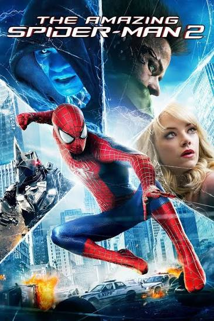

Mi pelicula favorita es The Amazing Spider-Man 2 de Marc Webb, protagonizada por Andrew Garfield y Emma Stone. Publicada en 2014, es la secuela de The Amazing Spider-Man.
The Amazing Spider-Man 2 es una película de superhéroe que sigue las aventuras de Peter Parker, quien debe enfrentarse a nuevos villanos mientras lucha por proteger su ciudad. Además, la película explora la relación de Peter con Gwen Stacy y los desafíos que enfrenta al equilibrar su vida personal con sus responsabilidades como Spider-Man.
A continuación, te presento algunos datos curiosos sobre The Amazing Spider-Man 2:
| Dato curioso | Descripción |
|---|---|
| Origen del personaje | Spider-Man fue creado por Stan Lee y Steve Ditko, y apareció por primera vez en Amazing Fantasy #15 en 1962. |
| Secuela | The Amazing Spider-Man 2 es la secuela de The Amazing Spider-Man, que fue lanzada en 2012 y dirigida también por Marc Webb. |
| Villanos | La película presenta a varios villanos icónicos de Spider-Man, incluyendo a Electro, Green Goblin y Rhino. |
| Recepción | A pesar de recibir críticas mixtas, la película fue un éxito en taquilla, recaudando más de $700 millones a nivel mundial. |
En conclusión, The Amazing Spider-Man 2 es una película que combina acción, romance y drama, ofreciendo una experiencia cinematográfica emocionante para los fanáticos del superhéroe. A pesar de sus críticas, sigue siendo una de mis películas favoritas por su historia, personajes y efectos visuales.
Más información en IMDb¡Gracias por leer mi reseña sobre mi película favorita!
¡Espero que te haya gustado y que te animes a verla si aún no lo has hecho!
Les dejo con la imagen de la película:
